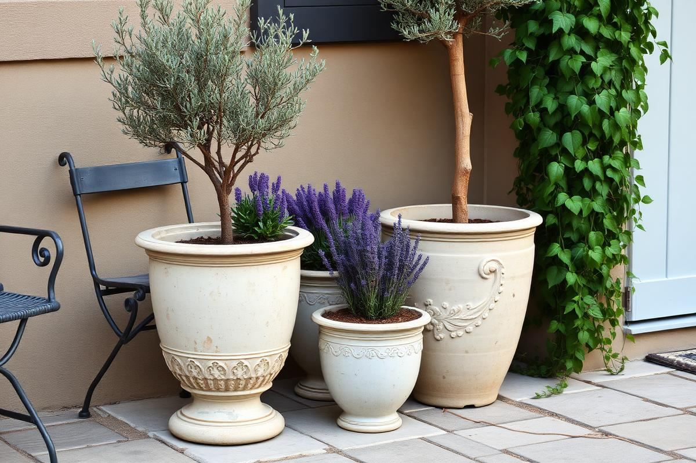

Outdoor Plant Styling Ideas for Patios and Balconies

Plants are the cheapest way to make an outdoor space feel finished, and the most commonly mishandled. The usual pattern is one plant bought at a time, each in a different pot, spaced evenly around the perimeter like a fence. The result reads as a collection of individual purchases rather than a designed space. Everything below is about fixing that with grouping, proportion, and a small amount of repetition.
Group, do not scatter
Odd-numbered clusters of three or five pots, placed together so their foliage overlaps slightly, read as one substantial mass. The same pots spread evenly around a terrace read as clutter. On a small patio I would rather have two strong groupings and clear floor between them than twelve pots forming a border.
Place groupings where they do something: framing the door, softening a hard corner, or screening a view you would rather not have. A plant in the middle of a wall with nothing around it is decoration; a plant that hides a drainpipe is design.
Pot sizing and proportion
As a rule, the plant should be roughly one and a half to two times the height of its pot. A 12-inch pot suits a plant that finishes around 18 to 24 inches tall. Undersized pots are the most common error and they cause two problems at once: the proportion looks wrong, and the root ball dries out within hours on a hot day.
- Minimum 12-inch diameter for anything you want to survive a hot summer unattended.
- 16 to 20 inches for shrubs, small trees, and anything evergreen.
- Always check for drainage holes; drill them if a decorative pot has none.
- Raise pots on feet so water drains and the base does not stain the floor.
The three-height rule
Every grouping wants three tiers: something tall and upright at the back, something full and rounded in the middle, and something trailing at the front that spills over the pot edge. Growers call it thriller, filler, spiller, and it works because it gives the eye a path from top to bottom instead of a flat line of foliage at one height.

You can achieve the same effect across separate pots rather than within one, which is easier to maintain — an olive or bay at the back, lavender or salvia in the middle, and trailing rosemary or ivy at the front.
Material and colour discipline
Choose one pot material and vary only the size. Terracotta throughout, or matt black fibreclay throughout, or unpainted concrete throughout. This single decision does more for a patio than any individual plant, because it turns a mixed collection into a coherent scheme. If you already own mismatched pots, painting them all one colour costs very little and works surprisingly well.
Keep flower colour restrained too. Two colours plus green is plenty in a small space. White and one accent — deep purple, soft coral, or lemon yellow — reads as considered where a full mix reads as a garden centre display.
Plant choices that survive neglect
For a sunny space with irregular watering: olive, lavender, rosemary, sedum, ornamental grasses, and pelargoniums. For shade: fern, hosta, heuchera, ivy, and hydrangea in a large pot. Evergreens are worth the extra cost because they carry the space through winter, when a patio of deciduous perennials becomes a collection of empty pots.
- Aim for at least half evergreen so the space works in January.
- Herbs earn their place twice — structure outdoors and use in the kitchen.
- Grasses add movement, which matters more in a small space than colour does.
- Avoid anything needing daily watering unless you genuinely enjoy the ritual.
Going vertical on walls and railings
Floor space in a small outdoor room is the scarcest resource, so grow upward. Railing planters, wall-mounted pot rings, a trellis with a climber, or a simple tiered plant stand all add planting without taking floor. On a balcony, hang planters on the inside of the railing rather than the outside — many leases prohibit the outside, and it is safer in wind.
The watering reality check
Containers in full sun dry out in a single hot day. Before buying twenty pots, be honest about whether you will water them daily in July. The practical answers are fewer, larger pots, which hold moisture far longer; a mulch of gravel or bark over the compost; water-retaining granules mixed into the compost at planting; and a battery timer with a drip line if you travel at all in summer.
A drip kit for six pots costs about the same as two decent plants and will save every one of them across a hot fortnight away.
A four-season planting plan
- Spring: bulbs planted the previous autumn — narcissi and tulips in the same pots that hold summer annuals.
- Summer: pelargoniums, salvia, and grasses; move pots to catch evening sun where you sit.
- Autumn: ornamental grasses come into their own; add heuchera for leaf colour.
- Winter: evergreen structure, plus cyclamen or skimmia for colour by the door.
Plan for the structure first and the flowers second. A patio built on evergreen shape looks good on a grey February morning, and everything you add in summer is then a bonus rather than the only thing holding the space together.
Key takeaways
- Group pots in odd numbers instead of spacing them around the perimeter.
- Match pot size to plant: roughly half to two thirds of the plant's height.
- Use three heights — upright, rounded, trailing — in every grouping.
- Stick to one pot material and two flower colours plus green.
- Make at least half the planting evergreen so winter still works.
Frequently asked questions
How should I arrange pots on a patio?
In odd-numbered clusters of three or five with the foliage overlapping, placed where they frame a door or screen something, rather than spaced evenly around the edge.
What size pot do outdoor plants need?
At least 12 inches in diameter for reliable summer survival, and 16 to 20 inches for shrubs and small trees.
What are the easiest plants for a sunny balcony?
Olive, lavender, rosemary, sedum, ornamental grasses, and pelargoniums all tolerate heat and irregular watering.
Should all my planters match?
Use one material and vary only the size. It is the single change that makes a mixed plant collection look like a designed scheme.
How do I keep pots alive while away in summer?
Use fewer, larger pots, mulch the surface, add water-retaining granules, and fit a battery timer with a drip line.

Sophia Bennett is a certified interior stylist and the senior editor at Styleire. She has spent more than eight years helping homeowners and renters create warm, functional interiors, with hands-on experience across small city apartments and family homes. Her work has been informed by close collaboration with independent designers, craftspeople, and product testers.
View full profile →Related reading

Small Balcony Decor Ideas: Turn 30 Square Feet Into a Room
A small balcony is not a wasted balcony. With three good choices, it becomes another room.

Garden Decor Ideas That Age Beautifully
Garden Decor Ideas That Age Beautifully — a clear, editor-tested guide covering the essentials without the filler.

Small Patio Furniture Guide: Choosing Pieces That Fit
Small outdoor spaces fail because the furniture is sized for a garden. Here are the dimensions, materials, and layouts that actually work outdoors in tight footprints.